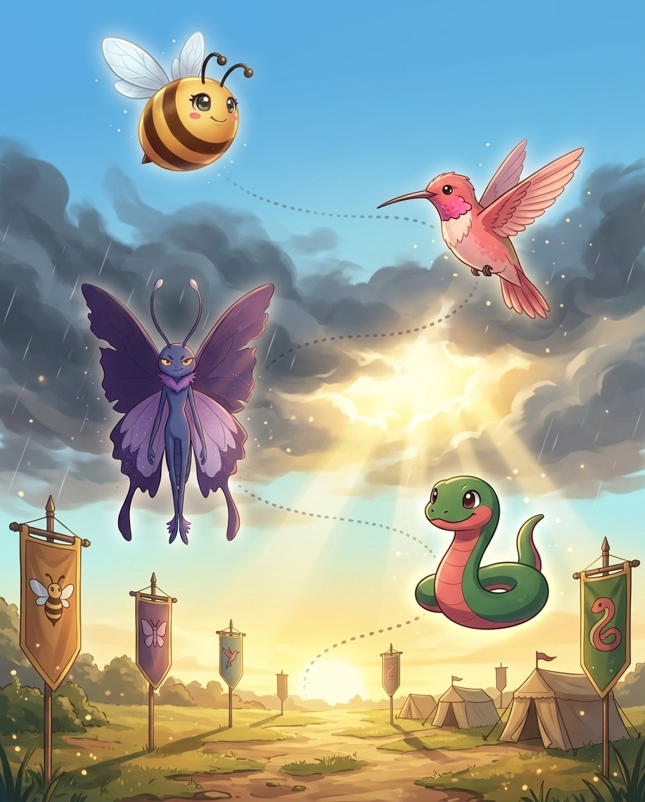
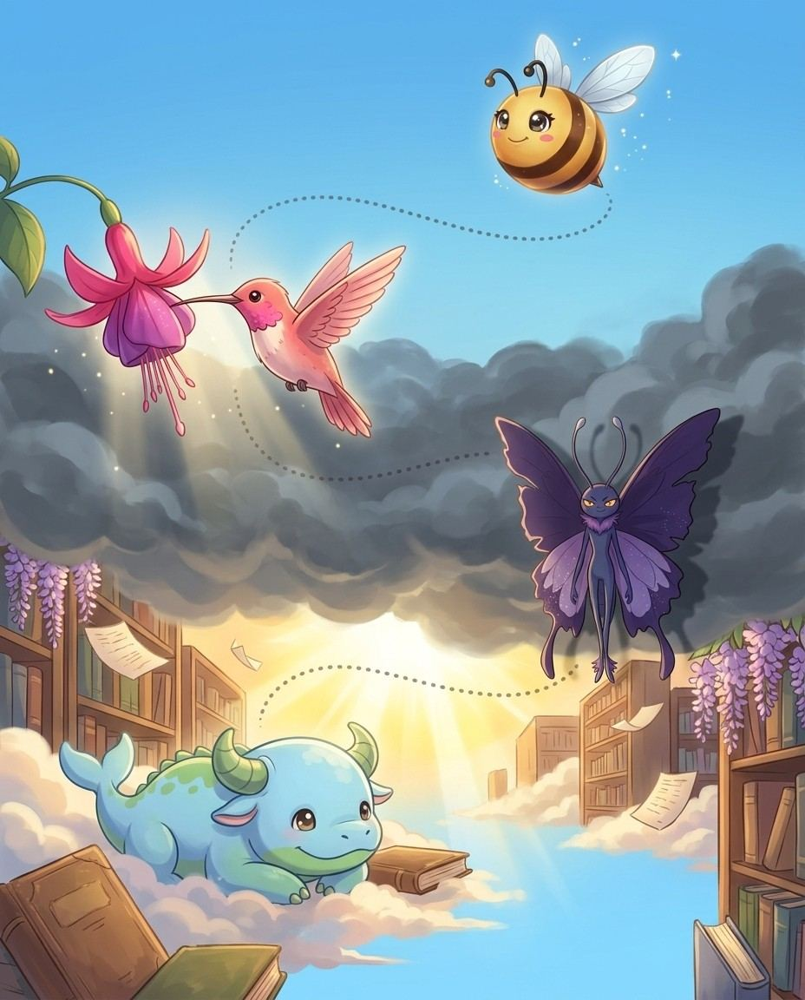
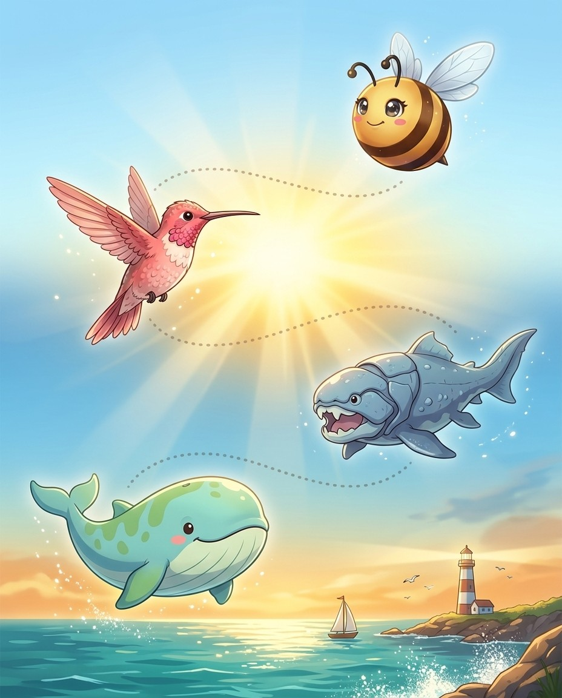
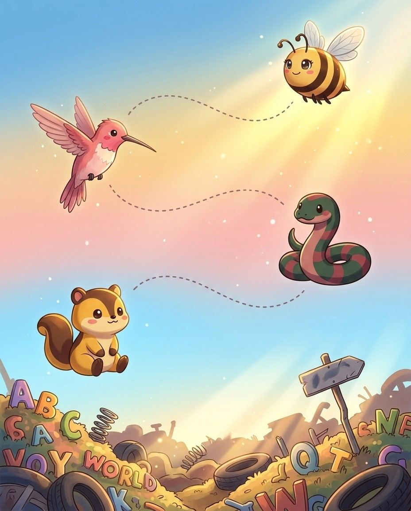

French words ending in -eau use the plural -eaux — the x is silent in both forms. The vowel combination e-a-u = /oh/ is a reliable French signal. Four letters make one sound.
The pro move
TABLEAU
Say it. t-uh-b-l-OH
Spell it. T · A · B · L · E · A · U
Say it again. t-uh-b-l-OH
Syllables. t · a · b · l · e · a · u
Sounds → Letters. [TAB=TAB] [loh=LEAU]
The -eau Pattern
French -eau = /oh/. Four letters, one syllable, one sound.
The Silent Plural -eaux
Singular -eau → plural -eaux — the x is completely silent. Both forms pronounced identically: tableau = tableaux = /TAB-loh/.
Vex alert
TABLEAU: a TABLE of living figures arranged like ART—the 'eau' is silent like a still painting
Check yourself
Cover the page and spell tableau · plateau · château out loud. Miss one? Read the idea again — it's faster than guessing twice.
flambeau/FLAM-boh/ a flaming torch (such as are used in processions at night)
nouveau/noo-VOH/ French for 'new,' used in English especially in phrases such as 'nouveau riche' (newly wealthy) or 'art nouveau' (a late 19th-century decorative art style).
beau/BOH/ a man who is the lover of a girl or young woman
rondeau/rah-NDOH/ a musical form that is often the last movement of a sonata
portmanteau/PAW-rtmah-ntoh/ a new word formed by joining two others and combining their meanings
morceau/mor-SOH/ a short literary or musical composition
flambeau/FLAM-boh/ a flaming torch (such as are used in processions at night)
gâteaux/ga-TOHZ/ any of various rich and elaborate cakes
châteaux/shuh-TOH/ an impressive country house (or castle) in France
tableaux/tuh-BLOH/ a group of people attractively arranged (as if in a painting)
plateaux/pla-TOHZ/ a relatively flat highland
Lock them in
Pick 4 words from above. Say each one as you write it — three times, no shortcuts. The third copy is the one your hand remembers.
French words ending in -oir or -oire carry their French spelling into English intact. The -oir sounds like /wahr/ — a distinctively French pattern impossible to guess without knowing it.
The pro move
BOUDOIR
Say it. b-OO-d-oy-r
Spell it. B · O · U · D · O · I · R
Say it again. b-OO-d-oy-r
Syllables. b · o · u · d · o · i · r
Sounds → Letters. [BOO=BOU] [dwahr=DOIR]
The -oir Pattern
French -oir = /wahr/ sound. Boudoir (bouder = to sulk) = a private sitting room. Abattoir (abattre = to strike down) = a slaughterhouse. Peignoir (peigner = to comb) = a lightweight dressing gown.
More -oir/-oire Words
Reservoir (réserver) = a lake storing water — R-E-S-E-R-V-O-I-R. Memoir (mémoire = memory) = a personal narrative.
Vex alert
A MEMOIR is a MEMory told with French flair — spell the French ending 'o-i-r', not 'i-o-r'.
Check yourself
Cover the page and spell boudoir · abattoir · peignoir out loud. Miss one? Read the idea again — it's faster than guessing twice.
3French Loanword Patterns · the Vibe-ette (French diminutive)
Bizzy-ette = a small version (French)
UH-OH!
VexAlways double-t: P-I-R-O-U-E-T-T-E
GOT IT!
UniHear the vowel before t → -ette, not -et
Vipermarionette = "little Mary" puppet
♫ narratedturn the page — the whole trick, explained →
16
Chapter 3 · -ette (French diminutive)The idea · ★★☆
The big idea
French -ette = a small version of something (diminutive). Always double-t, always ends in silent -e. Once you see the pattern, every -ette word spells itself.
The pro move
PIROUETTE
Say it. p-ih-r-oo-EH
Spell it. P · I · R · O · U · E · T · T · E
Say it again. p-ih-r-oo-EH
Syllables. p · i · r · o · u · e · t · t · e
Sounds → Letters. [pir=PIR] [oo=OU] [ET=ETTE]
The -ette Diminutive
French -ette makes things smaller or more delicate. Pirouette = a spinning turn. Marionette = a small puppet (originally "little Mary"). Palette (pale = shovel) = a small flat surface for colors.
-ette for Compositions
Vignette (vigne = vine) = a brief literary sketch. Roulette (rouler = roll) = little rolling wheel. Serviette = a small serving cloth = napkin. Brunette = having brown hair.
Vex alert
ROULETTE is a little wheel
Sound trap
palette sounds like palate, palate — at the mic, always ask for the meaning.
Check yourself
Cover the page and spell pirouette · marionette · palette out loud. Miss one? Read the idea again — it's faster than guessing twice.
Three French/Italian-derived endings giving English some of its most distinctive-looking words. Silent -e at the end; qu sounds like /k/. These patterns are completely regular once learned.
The pro move
PICTURESQUE
Say it. p-IH-k-ch-ur-uh-s-k
Spell it. P · I · C · T · U · R · E · S · Q · U · E
Say it again. p-IH-k-ch-ur-uh-s-k
Syllables. p · i · c · t · u · r · e · s · q · u · e
Italian -esco → French -esque → English. Picturesque = like a picture = visually charming. Grotesque (grotta = cave/grotto) = bizarre and distorted. Arabesque = in the Arabic style.
-ique = French Origin Signal
-ique words come from French. Boutique = a small specialty shop. Mystique = an air of mystery. Technique = a method. Physique = body structure. Antique = an old object.
Vex alert
OBLIQUe — think of a slanted line that is not quite EQUAL to straight.
Sound trap
opaque sounds like opake · plaque sounds like plack — at the mic, always ask for the meaning.
Check yourself
Cover the page and spell picturesque · grotesque · arabesque out loud. Miss one? Read the idea again — it's faster than guessing twice.
4. a theatrical entertainment of broad and earthy humor
6. is visually charming or quaint
8. is the manner in which the technical skills of a particular art are used
9. is odd or unnatural in appearance or shape
Down
1. an elderly man
2. is a small shop within a larger store
3. position in which the dancer has one leg raised behind and arms outstretched in a…
5. of size and dignity suggestive of a statue
7. is an aura of mystery or mystical power
Bizzing Bee · The World Tour27

5French Loanword Patterns · the Proving GroundFrench Silent Letters
BizzyFrench keeps letters it no longer says
UH-OH!
Vexcorps = C-O-R-P-S, p AND s silent
GOT IT!
NoodleFrench? → expect silent endings
Slowmoballet = ba-LAY, silent -t
♫ narratedturn the page — the whole trick, explained →
28
Chapter 5 · French Silent LettersThe idea · ★★★
The big idea
French words in English frequently carry silent final consonants — -t, -s, -x, -p, -d. These were once pronounced in Old French but fell silent while spelling was preserved. The result: some of English's trickiest words.
The pro move
RENDEZVOUS
Say it. RAH-ndih-voo
Spell it. R · E · N · D · E · Z · V · O · U · S
Say it again. RAH-ndih-voo
Syllables. raa · ndih · vuw
Sounds → Letters. [RON=REN] [day=DEZ] [voo=VOUS]
Silent Final -t
Ballet (ba-LAY), bouquet (boo-KAY), crochet (kroh-SHAY), ricochet (RIK-uh-shay), parquet (par-KAY), valet (VAL-ay), buffet (buh-FAY), debut (day-BYOO). The -t is spelled, never pronounced.
Silent Final -s
Rendezvous (RON-day-voo), corps (kor — BOTH p AND s silent!), chassis (SHAS-ee), faux pas (FOH-PAH — two final consonants silent), debris (duh-BREE), fracas (FRAY-kus).
Vex alert
BALLET ends in -ET (silent T) like a French baguETte — the T is there but never heard.
Sound trap
corps sounds like core — at the mic, always ask for the meaning.
Check yourself
Cover the page and spell ballet · bouquet · crochet out loud. Miss one? Read the idea again — it's faster than guessing twice.
Bizzing Bee · The World Tour29
Chapter 5 · French Silent LettersPractice · ★★★
Say it. Spell it out loud. Write it.
ballet
/ ba-LAY / · /bæˈleɪ/
a theatrical representation of a story that is performed to music by trained dancers
hook: BALLET ends in -ET (silent T) like a French baguETte — the T is there but never heard.
She had practiced ▁▁▁ for ten years before landing the role of the Swan Queen.
bouquet
/ b-oo-k-AY / · /bukˈeɪ/
an arrangement of flowers that is usually given as a present
hook: BOUQUET ends in -QUET but sounds like -KAY—picture a bouquet at a boutiQUE
The groom's hands trembled as he presented the bride with a ▁▁▁ of red roses and white lilies tied with a silk ribbon.
crochet
/ k-r-oh-sh-AY / · /kroʊʃˈeɪ/
is needlework with a needle having a hook at one end
hook: CROCHET ends silently in -ET like a French beret — hook a loop and say 'shay'!
Every evening, the grandmother would settle into her favorite armchair and ▁▁▁ colorful blankets for the grandchildren, her hook moving so quickly that the yarn seemed to form patterns by magic.
ricochet
/ r-IH-k-uh-sh-ay / · /rˈɪkəʃeɪ/
is the motion of an object after deflecting from another object
hook: RICOCHET ends in -CHET like a bouncing CATCH — it always comes back
The rubber ball bounced
parquet
/ p-ah-r-k-AY / · /pɑrkˈeɪ/
is a floor composed of strips or blocks of wood forming a pattern
hook: PARQUET ends in -ET like a French word—it IS French, with a silent T
The ballroom in the historic mansion featured a gleaming ▁▁▁ floor of alternating oak and cherry wood laid in a herringbone design.
valet
/ va-LAY / · /væˈleɪ/
a manservant who acts as a personal attendant to his employer
hook: A valet parks your car with élan — the silent T at the end is très French, like ballet.
Jeeves was Bertie Wooster's man
Bizzing Bee · The World Tour30
Chapter 5 · French Silent LettersRapid round · ★★★
More ammo — one line each.
buffet/BUH-fuht/ a piece of furniture that stands at the side of a dining room; has shelves and drawers
debut/day-BYOO/ the act of beginning something new
rendezvous/RAH-ndih-voo/ a meeting planned at a certain time and place
corps/KAWR/ an army unit usually consisting of two or more divisions and their support
chassis/CHA-see/ alternative names for the body of a human being
faux/FAWKS/ not genuine or real; being an imitation of the genuine article
faux pas
debris/d-uh-b-r-EE/ is the remains of things broken down or destroyed
silhouette/s-ih-l-uh-w-EH-t/ is a two-dimensional representation of the outline of an object
esprit/eh-SPREE/ liveliness of mind or spirit
nonchalant/n-ah-n-sh-uh-l-AH-n-t/ is coolly unconcerned unexcited
coiffure/kwah-FYOOR/ the arrangement of the hair (especially a woman's hair)
Lock them in
Pick 4 words from above. Say each one as you write it — three times, no shortcuts. The third copy is the one your hand remembers.
Bizzing Bee · The World Tour31
Chapter 5 · French Silent LettersCheckpoint · ★★★
Viper · Speller of the Serpent Pack runs the checkpoint
Do you own the idea?
Six questions on the chapter you just read. Circle your answers, then check the back. Viper's power is Unflappable — borrow it.
1. What does coiffure mean?
Athe arrangement of the hair (especially a woman's hair)
Balternative names for the body of a human being
Cthe act of beginning something new
Da meeting planned at a certain time and place
2. What does nonchalant mean?
A
Bis the motion of an object after deflecting from another object
Cis coolly unconcerned unexcited
Dliveliness of mind or spirit
3. “A COIFFURE is when you COIFf your hair into a fancy 'do—double the F, double the flair.” — which word is that about?
Aesprit
Bdebris
Cnonchalant
Dcoiffure
4. Which word fills the gap? “Before the graduation ceremony, Isabella spent an hour perfecting her ▁▁▁, weaving tiny flowers through her elegantly pinned-up curls.”
Achassis
Bcoiffure
Cbouquet
Dvalet
5. Which word belongs to this chapter’s family?
Aescape
Bcompunction
Ccoiffure
Diridescent
Dictation round
Hand this page to anyone nearby. They read the words from the answer key (Ch. 5 dictation, at the back) — you write, no peeking.
♫ narratedturn the page — the whole trick, explained →
34
Chapter 6 · French Agent Words: -eur / -eurThe idea · ★★☆
The big idea
French -eur = one who does (the French masculine agent suffix). These words never use -er — always -eur. And restaurateur never uses -n- before the -eur, despite what many people write.
The pro move
ENTREPRENEUR
Say it. ah-n-t-r-uh-p-r-uh-n-UR
Spell it. E · N · T · R · E · P · R · E · N · E · U · R
Say it again. ah-n-t-r-uh-p-r-uh-n-UR
Syllables. e · n · t · r · e · p · r · e · n · e · u · r
In French, -eur = one who does (masculine form). Chauffeur = one who drives (chauffe = heat — early cars needed coal-heating!). Raconteur = one who tells stories. Connoisseur = one who knows.
The Restaurateur Trap
Restaurateur (one who runs a restaurant) comes from restaurer (to restore). There is NO n before the -eur.
Vex alert
An amateur does it for LOVE
Check yourself
Cover the page and spell entrepreneur · restaurateur · chauffeur out loud. Miss one? Read the idea again — it's faster than guessing twice.
♫ narratedturn the page — the whole trick, explained →
40
Chapter 7 · Italian Double Consonants: -zz / -cc / -ll / …The idea · ★★☆
The big idea
Italian loves doubled consonants — they mark a short preceding vowel and are always preserved in English borrowings. Recognizing the double consonant = recognizing the Italian origin.
Italian uses doubled consonants to signal a short vowel before them — and English keeps these doublings intact. Mozzarella = M-O-Z-Z-A-R-E-L-L-A (double-z AND double-l).
-zz Words
Mozzarella, intermezzo, palazzo, pizzicato (pizzicare = pinch), piazza (a square), paparazzi (paparazzo = a buzzing insect = a freelance photographer), mezzo (half).
Vex alert
Staccato has double-c like two short detached notes — stac-CA-to, crisp and clipped.
Sound trap
mezzo sounds like meso- — at the mic, always ask for the meaning.
Check yourself
Cover the page and spell mozzarella · intermezzo · palazzo out loud. Miss one? Read the idea again — it's faster than guessing twice.
hook: MOZZARELLAhas a DOUBLE Z like pizza has double cheese — mozZZarella!
She stretched the warm ▁▁▁ over the pizza dough before sliding it into the stone oven.
intermezzo
/ in-tur-MET-soh / · /ɪntʌrˈmɛtsoʊ/
is a short musical entertainment between the acts of a drama or opera
hook: interMEZZO is played in the MIDDLE — MEZZanine, MEZZo — double Z like the buzz of an intermission.
The audience murmured appreciatively as the orchestra performed a gentle ▁▁▁ while the stagehands changed the scenery.
palazzo
/ puh-LAH-zoh / · /pəˈlɑzoʊ/
A large, impressive Italian palace or mansion, especially one from the Renaissance period; also refers to wide-legged trousers resembling the flowing lines of such architecture.
hook: PALAZZO — a PALACE with a fancy Italian -zzo ending.
The class visited a 15th-century ▁▁▁ in Florence whose marble corridors were lined with priceless Renaissance paintings.
pizzicato
/ pit-sih-KAH-toh / · /pɪtsɪˈkɑtoʊ/
a note or passage that is played pizzicato
hook: PIZZIcato has two Z's — pluck the strings TWICE, just like the double Z.
The violinists switched to ▁▁▁, plucking their strings to create a light, bouncy effect.
piazza
/ pee-A-zuh / · /piˈæzə/
a public square with room for pedestrians
hook: Two z's keep the PIZZA of open Italian squares buzzing with life.
they met at Elm Plaza
paparazzi
/ pah-pah-RAW-zee / · /pɑpɑˈrɔzi/
a freelance photographer who pursues celebrities trying to take candid photographs of them to sell to newspapers or magazines
hook: PAPARAZZI has a double Z — like two camera shutters clicking at once to catch celebrities.
A swarm of ▁▁▁ crowded outside the theater, cameras flashing as the movie star stepped out.
8. a freelance photographer who pursues celebrities trying to take candid photographs…
9. (music) marked by or composed of disconnected parts or sounds; cut short crisply
Down
2. is a short musical entertainment between the acts of a drama or opera
3. equal parts of espresso and hot milk topped with cinnamon and nutmeg and usually…
4. plant with dense clusters of tight green flower buds
6. a public square with room for pedestrians
Bizzing Bee · The World Tour45

8Italian Loanword Patterns · the Great LibraryItalian Music & Art Vocabulary
BizzyItalian = the language of music
UH-OH!
Vexpianissimo: P-I-A-N-I-S-S-I-M-O
GOT IT!
Livyatan-issimo = most / very
Unistaccare (detach) → staccato
♫ narratedturn the page — the whole trick, explained →
46
Chapter 8 · Italian Music & Art VocabularyThe idea · ★★☆
The big idea
Italian is the language of classical music. Every dynamic marking, tempo marking, and musical technique has an Italian name. Spelling bees love these words for their unusual consonant patterns.
The pro move
SFORZANDO
Say it. sfort-SAHN-doh
Spell it. S · F · O · R · Z · A · N · D · O
Say it again. sfort-SAHN-doh
Syllables. sfor · zan · do
Sounds → Letters. [sfor=SFOR] [TSAN=ZAN] [doh=DO]
Volume Dynamics — Softest to Loudest
Pianissimo (pp) → piano (p, soft) → mezzo-piano (mp) → mezzo-forte (mf) → forte (f, loud) → fortissimo (ff). Piano = soft (NOT the instrument in this context!); forte = loud/strong; mezzo = half.
Tempo Markings — Slowest to Fastest
Grave (very slow
Vex alert
Staccato has double-c like two short detached notes — stac-CA-to, crisp and clipped.
Check yourself
Cover the page and spell sforzando · pianissimo · fortissimo out loud. Miss one? Read the idea again — it's faster than guessing twice.
Bizzing Bee · The World Tour47
Chapter 8 · Italian Music & Art VocabularyPractice · ★★☆
Say it. Spell it out loud. Write it.
sforzando
/ sfort-SAHN-doh / · /sfɔrtˈsɑndoʊ/
an accented chord
hook: SFORZANDO: FORCE it—sforZANDO contains FORCE, which means play it HARD
The pianist struck a ▁▁▁ on the final beat that made the audience jump in their seats.
pianissimo
fortissimo
/ for-TIS-ih-moh / · /fɔrˈtɪsɪmoʊ/
(music) very loud
hook: FORTissimo — FORT-like STRENGTH of sound, double the 's' like double the volume
The orchestra reached the ▁▁▁ climax of the symphony, and the thunderous sound filled every corner of the concert hall.
allegretto
vivace
/ vih-VAH-chay / · /vɪˈvɑtʃeɪ/
(of tempo) very fast and lively
hook: Vivace ends in 'ace' — play it fast and lively to ace your performance!
play this section ▁▁▁!
prestissimo
/ preh-STIS-see-moh / · /prɛˈstɪssimoʊ/
(of tempo) as fast as possible
hook: PRESTO (fast) + ISSIMO (most) = PRESTISSIMO — the most-est presto you can possibly play.
this passage should be played ▁▁▁
Bizzing Bee · The World Tour48
Chapter 8 · Italian Music & Art VocabularyRapid round · ★★☆
More ammo — one line each.
staccato/stuh-KAH-toh/ (music) marked by or composed of disconnected parts or sounds; cut short crisply
legato/luh-GAH-toh/ (music) without breaks between notes; smooth and connected
pizzicato/pit-sih-KAH-toh/ a note or passage that is played pizzicato
tremolo
vibrato/vee-BRAH-toh/ (music) a pulsating effect in an instrumental or vocal tone produced by slight and rapid variations in pitch
adagio/uh-DAH-zhee-oh/ (music) a composition played in adagio tempo (slowly and gracefully)
moderato/mod-er-AH-toh/ (of tempo) moderate
intermezzo/in-tur-MET-soh/ is a short musical entertainment between the acts of a drama or opera
crescendo/krih-SHEH-ndoh/ (music) a gradual increase in loudness
diminuendo
chiaroscuro
sfumato
fresco/FREH-skoh/ a mural done with watercolors on wet plaster
Lock them in
Pick 4 words from above. Say each one as you write it — three times, no shortcuts. The third copy is the one your hand remembers.
Bizzing Bee · The World Tour49
Chapter 8 · Italian Music & Art VocabularyCheckpoint · ★★☆
Naga · Grandmaster of the Serpent Pack runs the checkpoint
Do you own the idea?
Six questions on the chapter you just read. Circle your answers, then check the back. Naga's power is Steady Nerve — borrow it.
1. What does allegretto mean?
A(music) very loud
B
Can accented chord
D(music) marked by or composed of disconnected parts or sounds; cut short crisply
2. What does diminuendo mean?
A(of tempo) very fast and lively
B
C
D(music) a composition played in adagio tempo (slowly and gracefully)
3. “PRESTO (fast) + ISSIMO (most) = PRESTISSIMO — the most-est presto you can possibly play.” — which word is that about?
Afortissimo
Bprestissimo
Cmoderato
Dtremolo
4. Which word fills the gap? “this passage should be played ▁▁▁”
Avivace
Ballegretto
Ccrescendo
Dprestissimo
5. Which word belongs to this chapter’s family?
Aallegretto
Bsmithereens
Cdiction
Deffervescence
Dictation round
Hand this page to anyone nearby. They read the words from the answer key (Ch. 8 dictation, at the back) — you write, no peeking.
1.
2.
3.
Bizzing Bee · The World Tour50
Chapter 8 · Italian Music & Art VocabularyGame · ★★☆
9Loanword Language Groups · the Roman ForumArabic Loanwords
BizzyArabic al- means "the"
UH-OH!
VexSome hid the al-: chemistry, cotton
GOT IT!
Slowmoalgebra = al-jabr (the reunion of parts)
Dunkleosteusalmanac = al-manakh (the calendar)
♫ narratedturn the page — the whole trick, explained →
52
Chapter 9 · Arabic LoanwordsThe idea · ★★☆
The big idea
Arabic gave English the al- prefix (Arabic "the") and a cluster of mathematics, astronomy, and science words. The al- is one of the most recognizable loanword signals in English.
The pro move
ALGORITHM
Say it. A-l-g-ur-ih-th-uh-m
Spell it. A · L · G · O · R · I · T · H · M
Say it again. A-l-g-ur-ih-th-uh-m
Syllables. a · l · g · o · r · i · t · h · m
Sounds → Letters. [AL=AL] [guh=GO] [rith=RITHM]
The al- Signal (Arabic "the")
Arabic al- = "the" was absorbed with the word into English. Algebra (al-jabr = reunion of broken parts). Algorithm (al-Khwarizmi = name of mathematician). Alchemy (al-kimiya = the transformation).
Mathematics from Arabic
Algebra, algorithm, cipher (sifr = zero), zero (sifr through Italian zefiro). Arabs preserved and advanced Greek mathematics when Europe had lost it.
Vex alert
NADIR — the lowest point; NADiR, think 'NADir Is Rock-bottom,' ends in -ir not -ier.
Check yourself
Cover the page and spell algebra · algorithm · alchemy out loud. Miss one? Read the idea again — it's faster than guessing twice.
Bizzing Bee · The World Tour53
Chapter 9 · Arabic LoanwordsPractice · ★★☆
Say it. Spell it out loud. Write it.
algebra
/ A-ljuh-bruh / · /ˈældʒəbrə/
the mathematics of generalized arithmetical operations
hook: AL-GE-BRA: algebra reunites broken numbers — spell it straight: a-l-g-e-b-r-a, no extra 'e'.
Once she understood how to solve for x, ▁▁▁ suddenly seemed far less frightening than it had before.
algorithm
/ A-l-g-ur-ih-th-uh-m / · /ˈælɡərˌɪðəm/
is a set of rules for solving a problem
hook: ALGORITHm contains ARITH as in ARITHmetic — a math rule has math in its spelling!
The computer scientist designed an ▁▁▁ that could sort thousands of names in less than a second.
alchemy
/ A-lkuh-mee / · /ˈælkəmi/
the way two individuals relate to each other
hook: ALCHemy has an ITCH in the middle — transforming metals is an itchy business.
their chemistry was wrong from the beginning -- they hated each other
almanac
/ AH-lmuh-nak / · /ˈɑlmənæk/
an annual publication including weather forecasts and other miscellaneous information arranged according to the calendar of a given year
hook: AL-MA-NAC: 'ALL MAN needs A Calendar' — an almanac tells everyone the dates.
Farmer Greta checked the ▁▁▁ every January to plan which crops to plant each month.
alcove
/ A-lkohv / · /ˈælkoʊv/
a small recess opening off a larger room
hook: An ALCOVe is like a COVE tucked inside a room — end it with a silent E like a cave.
She curled up in the cozy ▁▁▁ with a book while the storm raged outside.
zenith
/ ZEE-nuhth / · /ˈzinəθ/
the point above the observer that is directly opposite the nadir on the imaginary sphere against which celestial bodies appear to be projected
hook: At the ZENITH, the sun shines on your ZEN forehead — Z-E-N-I-T-H, straight overhead.
At noon in midsummer, the blazing sun hung near its ▁▁▁, casting almost no shadow on the ground below.
Bizzing Bee · The World Tour54
Chapter 9 · Arabic LoanwordsRapid round · ★★☆
More ammo — one line each.
nadir/NAY-der/ an extreme state of adversity; the lowest point of anything
azimuth/AZ-uh-muth/ is the angle of horizontal deviation of a bearing
elixir/ih-LIH-kser/ a sweet flavored liquid (usually containing a small amount of alcohol) used in compounding medicines to be taken by mouth in order to mask an unpleasant taste
tariff/t-EH-r-uh-f/ is a list showing duties imposed on imports or exports
hazard/HA-zerd/ a source of danger; a possibility of incurring loss or misfortune
magazine/MA-guh-zeen/ a periodic publication containing pictures and stories and articles of interest to those who purchase it or subscribe to it
safari/suh-FAH-ree/ an overland journey by hunters (especially in Africa)
assassin/uh-s-A-s-uh-n/ is a murderer especially in politics
alcohol/A-lkuh-hahl/ a liquor or brew containing alcohol as the active agent
cipher/SEYE-fer/ a message written in a secret code
Lock them in
Pick 4 words from above. Say each one as you write it — three times, no shortcuts. The third copy is the one your hand remembers.
Bizzing Bee · The World Tour55
Chapter 9 · Arabic LoanwordsCheckpoint · ★★☆
Fawn · Speller of the Wildhearts runs the checkpoint
Do you own the idea?
Six questions on the chapter you just read. Circle your answers, then check the back. Fawn's power is Fast Forward — borrow it.
1. What does magazine mean?
Aa liquor or brew containing alcohol as the active agent
Bis a set of rules for solving a problem
Can extreme state of adversity; the lowest point of anything
Da periodic publication containing pictures and stories and articles of interest to those who purchase it or subscribe to it
2. What does hazard mean?
Aa source of danger; a possibility of incurring loss or misfortune
Bis the angle of horizontal deviation of a bearing
Cthe way two individuals relate to each other
Dis a set of rules for solving a problem
3. Which spelling is correct?
Acippher
Bcepher
Cciphar
Dcipher
4. “A MAGAZINE is a storehouse of stories — remember it's MAGA-ZINE, not maga-ZINE with an I.” — which word is that about?
Ahazard
Bsafari
Cmagazine
Dtariff
5. Which word fills the gap? “it takes several years before a ▁▁▁ starts to break even or make money”
Ahazard
Bnadir
Calcove
Dmagazine
6. Which word belongs to this chapter’s family?
Amarionette
Bmagazine
Csyzygy
Dsanguine
Dictation round
Hand this page to anyone nearby. They read the words from the answer key (Ch. 9 dictation, at the back) — you write, no peeking.
1.
2.
Bizzing Bee · The World Tour56
Chapter 9 · Arabic LoanwordsGame · ★★☆
Naga's puzzle page
Scramble & rescue
Unscramble
eazgnaim
irdan
caleov
hercpi
halcool
laagber
Rescue the vowels
_lg_br_
m_g_z_n_
_lc_v_
z_n_th
_lm_n_c
_lg_r_thm
Bizzing Bee · The World Tour57
10Loanword Language Groups · the Storm of ElementsSpanish Loanwords
BizzySpanish gave us landscape, animal & food words
UH-OH!
Vexguerrilla = double-R AND double-L
GOT IT!
NagaHear double-l → spell L-L
Noodle-illo / -illa = a small version
♫ narratedturn the page — the whole trick, explained →
58
Chapter 10 · Spanish LoanwordsThe idea · ★★☆
The big idea
Spanish gave English its American landscape vocabulary, animal names, and food words. The signature patterns: -illo/-illa diminutives, ll = /y/ sound, and j = /h/ sound.
The pro move
GUERRILLA
Say it. ger-IH-luh
Spell it. G · U · E · R · R · I · L · L · A
Say it again. ger-IH-luh
Syllables. guer · ril · la
Sounds → Letters. [guh=GUER] [RIL=RIL] [uh=LA]
The -illo/-illa Diminutive
Spanish -illo/-illa = small version (diminutive). Armadillo (armado = armored + -illo = small armored one). Guerrilla (guerra = war + -illa = small war = irregular warfare).
American Landscape & Animals
Canyon (from cañón = large tube). Armadillo = the armored animal. Alligator (from el lagarto = the lizard). Mosquito (mosca = fly + -ito = small fly). Cockroach (cucaracha).
Vex alert
A torNADO makes you say 'NO!' — spell it with an A: tornAdo, not tornEdo.
Sound trap
guerrilla sounds like gorilla — at the mic, always ask for the meaning.
Check yourself
Cover the page and spell guerrilla · armadillo · vanilla out loud. Miss one? Read the idea again — it's faster than guessing twice.
Bizzing Bee · The World Tour59
Chapter 10 · Spanish LoanwordsPractice · ★★☆
Say it. Spell it out loud. Write it.
guerrilla
/ ger-IH-luh / · /ɡərˈɪlə/
a member of an irregular armed force that fights a stronger force by sabotage and harassment
hook: Two r's and two l's—guerrilla warfare is doubly intense
The ▁▁▁ fighters used their knowledge of the jungle terrain to launch surprise raids and then vanish before the larger army could respond.
armadillo
/ ah-rmuh-DIH-loh / · /ɑrməˈdɪloʊ/
burrowing chiefly nocturnal mammal with body covered with strong horny plates
hook: armaDILLo — the armored animal that DRILLS into dirt
The ▁▁▁ curled into a tight ball when it sensed danger, relying on its tough armored shell for protection.
vanilla
/ v-uh-n-IH-l-uh / · /vənˈɪlə/
is as in the flavor
hook: VaNILLa has two L's, just like the TALL vanilla bean pods standing side by side.
he liked ▁▁▁ ice cream
peccadillo
/ peh-kuh-DIL-oh / · /pɛkəˈdɪloʊ/
is a very minor or slight sin or offense
hook: A PECCADILLO is a little sin — it ends in DILLO like an armaDILLO, a small creature just like a small offense.
Forgetting to return a library book on time is a ▁▁▁, not a crime worth losing sleep over.
sarsaparilla
/ sas-puh-RIL-uh / · /sæspəˈrɪlə/
is a soft drink made from the extract of a root
hook: SARSaparilla: think 'SARS-a-pa-RILLA' — four punchy syllables like a drum roll on a soda fountain counter.
The old-fashioned soda shop served a frothy glass of ▁▁▁ that tasted like something from another era.
canyon
/ KA-nyuhn / · /ˈkænjən/
a ravine formed by a river in an area with little rainfall
hook: A CANYON has one N in the middle — one deep groove carved by one mighty river.
Standing at the rim of the ▁▁▁, she marveled at the layers of red and orange rock carved by the river below.
Bizzing Bee · The World Tour60
Chapter 10 · Spanish LoanwordsRapid round · ★★☆
More ammo — one line each.
mosquito/m-uh-s-k-EE-t-oh/ two-winged insect whose female has a long proboscis to pierce the skin and suck the blood of humans and animals
tornado/taw-RNAY-doh/ a localized and violently destructive windstorm occurring over land characterized by a funnel-shaped cloud extending toward the ground
hacienda/ha-see-EH-nduh/ a large estate in Spanish-speaking countries
sierra/see-EH-ruh/ a range of mountains (usually with jagged peaks and irregular outline)
rodeo/ROH-dee-oh/ an exhibition of cowboy skills
alligator/A-luh-gay-ter/ leather made from alligator's hide
chocolate/CHAW-kluht/ a beverage made from cocoa powder and milk and sugar; usually drunk hot
tomato/tuh-MAY-toh/ mildly acid red or yellow pulpy fruit eaten as a vegetable
avocado/a-vuh-KAH-doh/ a pear-shaped tropical fruit with green or blackish skin and rich yellowish pulp enclosing a single large seed
tortilla/taw-RTEE-uh/ thin unleavened pancake made from cornmeal or wheat flour
jalapeño/ha-luh-PEE-nyoh/ plant bearing very hot and finely tapering long peppers; usually red
Lock them in
Pick 4 words from above. Say each one as you write it — three times, no shortcuts. The third copy is the one your hand remembers.
Bizzing Bee · The World Tour61
Chapter 10 · Spanish LoanwordsCheckpoint · ★★☆
Uni · Grandmaster of the Wild Pond runs the checkpoint
Do you own the idea?
Six questions on the chapter you just read. Circle your answers, then check the back. Uni's power is Power Core — borrow it.
1. What does tornado mean?
Athin unleavened pancake made from cornmeal or wheat flour
Bmildly acid red or yellow pulpy fruit eaten as a vegetable
Ca localized and violently destructive windstorm occurring over land characterized by a funnel-shaped cloud extending toward the ground
Dburrowing chiefly nocturnal mammal with body covered with strong horny plates
2. What does avocado mean?
Aleather made from alligator's hide
Ba localized and violently destructive windstorm occurring over land characterized by a funnel-shaped cloud extending toward the ground
Cis as in the flavor
Da pear-shaped tropical fruit with green or blackish skin and rich yellowish pulp enclosing a single large seed
3. Which spelling is correct?
Aseerra
Bsierra
Csiera
Dseirra
4. “A torNADO makes you say 'NO!' — spell it with an A: tornAdo, not tornEdo.” — which word is that about?
Ajalapeño
Btornado
Cavocado
Dpeccadillo
Dictation round
Hand this page to anyone nearby. They read the words from the answer key (Ch. 10 dictation, at the back) — you write, no peeking.
1.
2.
Bizzing Bee · The World Tour62
Chapter 10 · Spanish LoanwordsGame · ★★☆
Fawn's puzzle page
Crossword
1
2
3
4
5
6
7
8
9
Across
3. a localized and violently destructive windstorm occurring over land characterized…
4. a range of mountains (usually with jagged peaks and irregular outline)
6. a ravine formed by a river in an area with little rainfall
7. is a soft drink made from the extract of a root
8. burrowing chiefly nocturnal mammal with body covered with strong horny plates
9. is as in the flavor
Down
1. a large estate in Spanish-speaking countries
2. is a very minor or slight sin or offense
5. a member of an irregular armed force that fights a stronger force by sabotage and…
Bizzing Bee · The World Tour63
11Loanword Language Groups · the Engine RoomJapanese Loanwords
BizzyJapanese: consonant + vowel, over and over
GOT IT!
NectarMany are little compounds with meaning
Fawntsunami = tsu (harbor) + nami (wave)
Rattlesorigami = ori (fold) + kami (paper)
♫ narratedturn the page — the whole trick, explained →
64
Chapter 11 · Japanese LoanwordsThe idea · ★★☆
The big idea
Japanese loanwords in English are recognizable by their clean alternating consonant-vowel (CV) syllable structure — no consonant clusters, always ending in a vowel (or n). They look and sound completely unlike Latin or Greek words.
The pro move
TSUNAMI
Say it. tsoo-NAH-mee
Spell it. T · S · U · N · A · M · I
Say it again. tsoo-NAH-mee
Syllables. tsuw · naa · miy
Sounds → Letters. [tsoo=TSU] [NAH=NA] [mee=MI]
The CV Pattern
Japanese syllables are consonant + vowel: ka, ki, ku, ke, ko; sa, si, su.... English loanwords from Japanese keep this structure: karate = ka·ra·te (3 CV syllables).
Nature & Disaster Words
Tsunami (tsu = harbor + nami = wave) = a harbor wave = a large seismic ocean wave.
Vex alert
A FUTON has one T—it's a flat bed, not a fat one, so keep it thin with one T.
Check yourself
Cover the page and spell tsunami · typhoon · origami out loud. Miss one? Read the idea again — it's faster than guessing twice.
Bizzing Bee · The World Tour65
Chapter 11 · Japanese LoanwordsPractice · ★★☆
Say it. Spell it out loud. Write it.
tsunami
/ tsoo-NAH-mee / · /tsuˈnɑmi/
a cataclysm resulting from a destructive sea wave caused by an earthquake or volcanic eruption
hook: TSUNAMI: the silent T hides like a wave gathering underwater — T-S-U-N-A-M-I, harbor wave.
a colossal ▁▁▁ destroyed the Minoan civilization in minutes
typhoon
/ teye-FOON / · /taɪˈfun/
a tropical cyclone occurring in the western Pacific or Indian oceans
hook: A TYPHOON hits with a BOOM — hear that OON at the end like the howling wind.
The fishermen rushed back to shore when the weather radar showed a ▁▁▁ building strength over the Pacific.
origami
/ aw-ree-GAH-mee / · /ɔriˈɡɑmi/
the Japanese art of folding paper into shapes representing objects (e.g., flowers or birds)
hook: ORIGAMI: ORI folds the GAMI paper — one M only, as delicate as a paper crane.
With careful folds and creases, she transformed a single square of paper into an ▁▁▁ crane.
haiku
/ HEYE-koo / · /ˈhaɪku/
an epigrammatic Japanese verse form of three short lines
hook: HAIKU ends in KU — think of counting syllables: five, seven, five — KU sounds like 'coo' of a peaceful dove.
For her class assignment, Maya wrote a ▁▁▁ about the first snowfall, capturing the quiet beauty of winter in just seventeen syllables.
karaoke
/ keh-ree-OH-kee / · /kɛriˈoʊki/
singing popular songs accompanied by a recording of an orchestra (usually in bars or nightclubs)
hook: KARAOKE: an EMPTY (kara) ORCHESTRA (oke) — you fill in the singing! K-A-R-A-O-K-E.
Everyone cheered when Marcus grabbed the microphone at ▁▁▁ night and belted out a pop anthem.
manga
/ MA-ngguh / · /ˈmæŋɡə/
A style of Japanese comic books and graphic novels featuring distinctive artwork with expressive characters, dramatic panel layouts, and stories covering a wide range of genres for all ages.
hook: MANGA: 'MAN with a GA(p) in his comic book' — Japanese comics with dramatic panels.
She read three volumes of her favorite ▁▁▁ series before bed every Friday night.
Bizzing Bee · The World Tour66
Chapter 11 · Japanese LoanwordsRapid round · ★★☆
More ammo — one line each.
karate/k-ur-AH-t-ee/ is a method of self-defense
judo/JOO-doh/ a sport adapted from jujitsu (using principles of not resisting) and similar to wrestling; developed in Japan
samurai/SA-muu-reye/ a Japanese warrior who was a member of the feudal military aristocracy
sushi/SOO-shee/ rice (with raw fish) wrapped in seaweed
teriyaki/teh-rih-YAH-kee/ beef or chicken or seafood marinated in spicy soy sauce and grilled or broiled
wasabi/wuh-SAH-bee/ a Japanese plant of the family Cruciferae with a thick green root
futon/FOO-tah-n/ mattress consisting of a pad of cotton batting that is used for sleeping on the floor or on a raised frame
kimono/kuh-MOH-nuh/ a loose robe; imitated from robes originally worn by Japanese
tofu/TOH-foo/ cheeselike food made of curdled soybean milk
ninja/NIH-njuh/ a member of the ninja who were trained in martial arts and hired for espionage or sabotage or assassinations; a person skilled in ninjutsu
anime/a-nih-MAY/ a hard copal derived from an African tree
Lock them in
Pick 4 words from above. Say each one as you write it — three times, no shortcuts. The third copy is the one your hand remembers.
Bizzing Bee · The World Tour67
Chapter 11 · Japanese LoanwordsCheckpoint · ★★☆
Dunkleosteus · Champion of the Colossal Ages runs the checkpoint
Do you own the idea?
Six questions on the chapter you just read. Circle your answers, then check the back. Dunkleosteus's power is Mind Palace — borrow it.
1. What does ninja mean?
Amattress consisting of a pad of cotton batting that is used for sleeping on the floor or on a raised frame
Ba member of the ninja who were trained in martial arts and hired for espionage or sabotage or assassinations; a person skilled in ninjutsu
Csinging popular songs accompanied by a recording of an orchestra (usually in bars or nightclubs)
Dbeef or chicken or seafood marinated in spicy soy sauce and grilled or broiled
2. What does wasabi mean?
Aa Japanese warrior who was a member of the feudal military aristocracy
Ba loose robe; imitated from robes originally worn by Japanese
Ca Japanese plant of the family Cruciferae with a thick green root
Da tropical cyclone occurring in the western Pacific or Indian oceans
3. “A NINJA sneaks silently — the j is the silent shadow between nin and a: n-i-n-j-a.” — which word is that about?
Akarate
Bninja
Corigami
Dkaraoke
4. Which word fills the gap? “Moving silently through the shadows, the ▁▁▁ slipped past the guards and retrieved the stolen scroll.”
Aninja
Bfuton
Cjudo
Dwasabi
Dictation round
Hand this page to anyone nearby. They read the words from the answer key (Ch. 11 dictation, at the back) — you write, no peeking.
♫ narratedturn the page — the whole trick, explained →
70
Chapter 12 · German LoanwordsThe idea · ★★★
The big idea
German words in English are often philosophical, psychological, or cultural compound nouns. They keep their German spelling completely — making them some of the most distinctive-looking words in English.
The pro move
SCHADENFREUDE
Say it. SHA-dih-nfroyd
Spell it. S · C · H · A · D · E · N · F · R · E · U · D · E
German forms nouns by joining words. Zeitgeist (Zeit = time + Geist = spirit) = spirit of the age. Wanderlust (wandern = to wander + Lust = desire) = desire to travel.
Vex alert
KinderGARTEN is a GARDEN for children — not a 'garden' spelled wrong!
Check yourself
Cover the page and spell schadenfreude · zeitgeist · wanderlust out loud. Miss one? Read the idea again — it's faster than guessing twice.
Bizzing Bee · The World Tour71
Chapter 12 · German LoanwordsPractice · ★★★
Say it. Spell it out loud. Write it.
schadenfreude
/ SHA-dih-nfroyd / · /ˈʃædɪnfrɔɪd/
delight in another person's misfortune
hook: SCHADEN looks like 'shaken'—you feel a shameful joy when someone else gets shaken up.
He felt a guilty ▁▁▁ when his rival tripped on the way to accept the award.
zeitgeist
/ TSEYE-tgeyest / · /ˈtsaɪtɡaɪst/
the defining spirit or mood of a particular period in history as shown by the ideas and beliefs of the time
hook: ZEITgeist: ZEIT (time) + GEIST (ghost/spirit) — the ghost of the era
Social media, constant connectivity, and a hunger for viral fame seemed to perfectly capture the ▁▁▁ of the early twenty-first century.
wanderlust
/ WAH-nder-luhst / · /ˈwɑndərləst/
very strong or irresistible impulse to travel
hook: WANDERlust: you LUST to WANDER — both full words hidden inside, no letters lost.
Her ▁▁▁ drove her to book a flight to a new country every summer.
weltanschauung
/ VELT-ahn-show-oong / · /ˈvɛltɑnʃaʊuŋ/
a comprehensive view of the world and human life
hook: WELTANSCHAUUNG = WELT (world) + AN + SCHAU (look) + UNG — 'world-look-ing,' your whole worldview.
Her travels through six continents completely changed her ▁▁▁, giving her a truly global perspective.
doppelganger
angst
/ AHNGKST / · /ˈɑŋkst/
an acute but unspecific feeling of anxiety; usually reserved for philosophical anxiety about the world or about personal freedom
hook: ANGST hides a tight cluster: A-N-G-S-T — five letters squeezed together, just like anxiety squeezes your chest.
His journal was filled with teenage ▁▁▁, every page heavy with worry about the future and his place in the world.
Bizzing Bee · The World Tour72
Chapter 12 · German LoanwordsRapid round · ★★★
More ammo — one line each.
gestalt/geh-SHTALT/ a configuration or pattern of elements so unified as a whole that it cannot be described merely as a sum of its parts
poltergeist/POH-lter-geyest/ a ghost that announces its presence with rapping and the creation of disorder
kitsch/KIHCH/ excessively garish or sentimental art; usually considered in bad taste
rucksack/RUH-ksak/ a bag carried by a strap on your back or shoulder
leitmotif/LEYE-tmoh-teef/ a melodic phrase that accompanies the reappearance of a person or situation (as in Wagner's operas)
kindergarten/KIH-nder-gah-rtuhn/ a preschool for children age 4 to 6 to prepare them for primary school
schmaltz/SHMAHLTS/ (Yiddish) excessive sentimentality in art or music
pretzel/PREH-tzuhl/ glazed and salted cracker typically in the shape of a loose knot
hamburger/HA-mber-ger/ a sandwich consisting of a fried cake of minced beef served on a bun, often with other ingredients
Lock them in
Pick 4 words from above. Say each one as you write it — three times, no shortcuts. The third copy is the one your hand remembers.
Bizzing Bee · The World Tour73
Chapter 12 · German LoanwordsCheckpoint · ★★★
Noodle · Rookie of the Serpent Pack runs the checkpoint
Do you own the idea?
Six questions on the chapter you just read. Circle your answers, then check the back. Noodle's power is Unflappable — borrow it.
1. What does leitmotif mean?
Aa preschool for children age 4 to 6 to prepare them for primary school
Ba ghost that announces its presence with rapping and the creation of disorder
Cdeep-fried breaded veal cutlets
Da melodic phrase that accompanies the reappearance of a person or situation (as in Wagner's operas)
2. What does zeitgeist mean?
Aa preschool for children age 4 to 6 to prepare them for primary school
Bdeep-fried breaded veal cutlets
Cthe defining spirit or mood of a particular period in history as shown by the ideas and beliefs of the time
Da comprehensive view of the world and human life
3. Which spelling is correct?
Alietmotif
Bleitmotif
Cleittmotif
Dliitmotif
4. “A LEITMOTIF LEADS the motif — LEIT means 'leading,' so lead with L-E-I-T then motif.” — which word is that about?
Awanderlust
Bleitmotif
Cpoltergeist
Drucksack
Dictation round
Hand this page to anyone nearby. They read the words from the answer key (Ch. 12 dictation, at the back) — you write, no peeking.
1.
2.
Bizzing Bee · The World Tour74
Chapter 12 · German LoanwordsGame · ★★★
Dunkleosteus's puzzle page
Scramble & rescue
Unscramble
rtlitpegose
iietzsegt
istkch
foeiimttl
harrebgmu
kccuarks
Rescue the vowels
schn_tz_l
g_st_lt
p_lt_rg__st
k_tsch
d_pp_lg_ng_r
pr_tz_l
Bizzing Bee · The World Tour75

13Loanword Language Groups · the Wide StraitSanskrit & Hindi Loanwords
BizzySanskrit = spiritual words; Hindi = household words
GOT IT!
NectarFinal -a is /uh/ — never add -h
Dunkleosteusyoga = yuj (to unite); karma = action
Livyatanmantra = man (think) + tra (tool)
♫ narratedturn the page — the whole trick, explained →
76
Chapter 13 · Sanskrit & Hindi LoanwordsThe idea · ★★☆
The big idea
Sanskrit gave English spiritual and philosophical vocabulary; Hindi gave everyday household words. Both tend to end in -a and use vowel-rich spellings. Many came through Portuguese or British colonial contact.
The pro move
NIRVANA
Say it. nih-RVAH-nuh
Spell it. N · I · R · V · A · N · A
Say it again. nih-RVAH-nuh
Syllables. nih · rvaa · nah
Sounds → Letters. [nir=NIR] [VAH=VA] [nuh=NA]
Sanskrit Spiritual Words
Nirvana = extinction of desire = liberation. Karma (karman = action) = what you do comes back. Avatar (ava = down + tara = crossing) = a deity's earthly form.
Hindi Everyday Words
Shampoo (champo = press/massage). Bungalow (bangla = Bengali-style house with a veranda). Jungle (jangal = forest, wilderness). Thug (thag = swindler — originally a member of a criminal cult).
Vex alert
NIRVANA starts with NIR not NER — think 'Near vana' is peace, but spell it NI-R-V-A-N-A.
Sound trap
pundit sounds like pandit · loot sounds like lute — at the mic, always ask for the meaning.
Check yourself
Cover the page and spell nirvana · karma · avatar out loud. Miss one? Read the idea again — it's faster than guessing twice.
Bizzing Bee · The World Tour77
Chapter 13 · Sanskrit & Hindi LoanwordsPractice · ★★☆
Say it. Spell it out loud. Write it.
nirvana
/ nih-RVAH-nuh / · /nɪˈrvɑnə/
(Hinduism and Buddhism) the beatitude that transcends the cycle of reincarnation; characterized by the extinction of desire and suffering and individual consciousness
hook: NIRVANA starts with NIR not NER — think 'Near vana' is peace, but spell it NI-R-V-A-N-A.
After weeks of stressful exams, sinking into a hammock with a good book felt like pure ▁▁▁.
karma
/ KAH-rmuh / · /ˈkɑrmə/
(Hinduism and Buddhism) the effects of a person's actions that determine his destiny in his next incarnation
hook: KARMA starts with K — Kind Actions Revisit Me Always — K-A-R-M-A.
When the bully tripped over his own shoelace right after knocking down someone's lunch tray, his classmates whispered, '▁▁▁.'
avatar
/ A-vuh-tahr / · /ˈævətɑr/
a new personification of a familiar idea
hook: AVATAR: A Very Awesome Terrestrial Appearance Reborn — and only one A in the middle: AV-A-TAR.
the embodiment of hope
mantra
/ MA-ntruh / · /ˈmæntrə/
a commonly repeated word or phrase
hook: A MANTRA is a tool for the MIND — M-A-N-T-R-A, no E sneaking in after the T.
she repeated `So pleased with how its going' at intervals like a ▁▁▁
yoga
/ YOH-guh / · /ˈjoʊɡə/
Hindu discipline aimed at training the consciousness for a state of perfect spiritual insight and tranquility that is achieved through the three paths of actions and knowledge and devotion
hook: YOGA unites body and mind — YOke your body and soul toGether with yOGA
Every morning before school, she practiced ▁▁▁ in the backyard to calm her mind and stretch her muscles.
dharma
/ DAH-rmuh / · /ˈdɑrmə/
basic principles of the cosmos; also: an ancient sage in Hindu mythology worshipped as a god by some lower castes
hook: DHARMA holds the cosmos together — hold onto that 'h' right after the 'D'.
The monk spent decades studying ▁▁▁, seeking to understand the universal laws that govern all existence.
Bizzing Bee · The World Tour78
Chapter 13 · Sanskrit & Hindi LoanwordsRapid round · ★★☆
More ammo — one line each.
chakra/CHUK-ruh/ In Hindu and yogic tradition, a chakra is one of seven centers of spiritual energy believed to exist in the human body, each associated with specific physical and emotional functions.
mandala/MAH-duh-luh/ any of various geometric designs (usually circular) symbolizing the universe; used chiefly in Hinduism and Buddhism as an aid to meditation
shampoo/sha-MPOO/ cleansing agent consisting of soaps or detergents used for washing the hair
bungalow/BUH-ngguh-loh/ a small house with a single story
jungle/JUH-ngguhl/ a location marked by an intense competition and struggle for survival
thug/THUHG/ an aggressive and violent young criminal
bandana/ba-NDA-nuh/ large and brightly colored handkerchief; often used as a neckerchief
dinghy/d-IH-ng-ee/ is a small boat designed as a lifeboat
juggernaut/JUH-ger-nawt/ a massive inexorable force that seems to crush everything in its way
pundit/PUH-nduht/ someone who has been admitted to membership in a scholarly field
loot/LOOT/ goods or money obtained illegally
samsara/suh-MSAH-ruh/ (Hinduism and Buddhism) the endless cycle of birth and suffering and death and rebirth
Lock them in
Pick 4 words from above. Say each one as you write it — three times, no shortcuts. The third copy is the one your hand remembers.
Bizzing Bee · The World Tour79
Chapter 13 · Sanskrit & Hindi LoanwordsCheckpoint · ★★☆
Rattles · Speller of the Serpent Pack runs the checkpoint
Do you own the idea?
Six questions on the chapter you just read. Circle your answers, then check the back. Rattles's power is Blink Step — borrow it.
1. What does karma mean?
Acleansing agent consisting of soaps or detergents used for washing the hair
Ba location marked by an intense competition and struggle for survival
C(Hinduism and Buddhism) the effects of a person's actions that determine his destiny in his next incarnation
Dbasic principles of the cosmos; also: an ancient sage in Hindu mythology worshipped as a god by some lower castes
2. What does thug mean?
Aan aggressive and violent young criminal
Ba location marked by an intense competition and struggle for survival
C(Hinduism and Buddhism) the effects of a person's actions that determine his destiny in his next incarnation
Dis a small boat designed as a lifeboat
3. “KARMA starts with K — Kind Actions Revisit Me Always — K-A-R-M-A.” — which word is that about?
Ayoga
Bkarma
Cdinghy
Dchakra
4. Which word fills the gap? “When the bully tripped over his own shoelace right after knocking down someone's lunch tray, his classmates whispered, '▁▁▁.'”
Amantra
Bmandala
Cavatar
Dkarma
Dictation round
Hand this page to anyone nearby. They read the words from the answer key (Ch. 13 dictation, at the back) — you write, no peeking.
1.
2.
Bizzing Bee · The World Tour80
Chapter 13 · Sanskrit & Hindi LoanwordsGame · ★★☆
Noodle's puzzle page
Crossword
1
2
3
4
5
6
7
8
9
10
Across
3. basic principles of the cosmos
5. (Hinduism and Buddhism) the effects of a person's actions that determine his…
6. a small house with a single story
9. any of various geometric designs (usually circular) symbolizing the universe
10. a new personification of a familiar idea
Down
1. In Hindu and yogic tradition
2. cleansing agent consisting of soaps or detergents used for washing the hair
4. Hindu discipline aimed at training the consciousness for a state of perfect…
7. (Hinduism and Buddhism) the beatitude that transcends the cycle of reincarnation
8. a commonly repeated word or phrase
Bizzing Bee · The World Tour81

14Loanword Language Groups · the Word JunkyardNorse & Old Norse Loanwords
BizzyVikings gave us short, sturdy words
GOT IT!
Nectarsk- is a reliable Norse signal
Noodleberserk = ber (bear) + serkr (shirt)
Slowmoransack = rann (house) + saka (seek)
♫ narratedturn the page — the whole trick, explained →
82
Chapter 14 · Norse & Old Norse LoanwordsThe idea · ★★☆
The big idea
Old Norse (the language of the Vikings) gave English its basic vocabulary of law, seafaring, and everyday life. Norse words often have the sk- cluster, the -th ending, and short powerful structures.
The pro move
BERSERK
Say it. ber-SURK
Spell it. B · E · R · S · E · R · K
Say it again. ber-SURK
Syllables. ber · ser · k
Sounds → Letters. [bur=BER] [SURK=SERK]
The sk- Signal
Old Norse favored the sk- cluster where Old English used sc-: skill (skil = distinction)
Law & Society Words from Norse
Law itself is from Norse lag = that which is laid down. Outlaw (ût-lagi = outside the law).
Vex alert
BERSERK — no 'z'!
Sound trap
skull sounds like scull — at the mic, always ask for the meaning.
Check yourself
Cover the page and spell berserk · ransack · outlaw out loud. Miss one? Read the idea again — it's faster than guessing twice.
Bizzing Bee · The World Tour83
Chapter 14 · Norse & Old Norse LoanwordsPractice · ★★☆
Say it. Spell it out loud. Write it.
berserk
/ ber-SURK / · /bərˈsʌrk/
one of the ancient Norse warriors legendary for working themselves into a frenzy before a battle and fighting with reckless savagery and insane fury
hook: BERSERK — no 'z'! Norse bear-warriors wore bear-SHIRTS (serk), so spell it ber-SERK, not bez-erk.
the soldier was completely amuck
ransack
/ RA-nsak / · /ˈrænˌsæk/
steal goods; take as spoils
hook: To RANSACK a room is to SCAN it with a SACK—note the double C-K at the end: R-A-N-S-A-C-K.
During the earthquake people looted the stores that were deserted by their owners
outlaw
/ OW-tlaw / · /ˈaʊtlɔ/
someone who has committed a crime or has been legally convicted of a crime
hook: An OUTLAW lives OUTSIDE the LAW — both words are hiding right inside.
Marijuana is criminalized in the U.S.
starboard
/ STAH-rberd / · /ˈstɑrbərd/
the right side of a ship or aircraft to someone who is aboard and facing the bow or nose
hook: STAR-BOARD: the right side where sailors once steered, using a board like a rudder — steer a BOARD to the stars.
The captain ordered the crew to look off the ▁▁▁ side where a pod of dolphins was leaping.
fjord
/ FYAWRD / · /ˈfjɔrd/
a long narrow inlet of the sea between steep cliffs; common in Norway
hook: FJORD starts with FJ — imagine a Freeze of ice + waves of water forming the Norwegian inlet — FJ-ORD.
The cruise ship sailed slowly through the majestic ▁▁▁, its towering cliffs rising straight out of the icy water.
sleet
/ SLEET / · /ˈslit/
partially melted snow (or a mixture of rain and snow)
hook: SLEET rhymes with FLEET and MEET — they all share -EET, cold and sharp like icy rain.
If the temperature rises above freezing, it will probably ▁▁▁
dregs/DREHGZ/ sediment that has settled at the bottom of a liquid
skill/SKIHL/ an ability that has been acquired by training
sky/s-k-AY/ the space surrounding the earth
skull/SKUHL/ the bony skeleton of the head of vertebrates
skirt/SKURT/ cloth covering that forms the part of a garment below the waist
law/LAW/ the collection of rules imposed by authority
they
their
them
egg/EHG/ animal reproductive body consisting of an ovum or embryo together with nutritive and protective envelopes; especially the thin-shelled reproductive body laid by e.g. female birds
ugly/UH-glee/ displeasing to the senses
wrong/RAWNG/ that which is contrary to the principles of justice or law
Lock them in
Pick 4 words from above. Say each one as you write it — three times, no shortcuts. The third copy is the one your hand remembers.
Bizzing Bee · The World Tour85
Chapter 14 · Norse & Old Norse LoanwordsCheckpoint · ★★☆
Viper · Speller of the Serpent Pack runs the checkpoint
Do you own the idea?
Six questions on the chapter you just read. Circle your answers, then check the back. Viper's power is Unflappable — borrow it.
1. What does ugly mean?
Athe right side of a ship or aircraft to someone who is aboard and facing the bow or nose
Bdispleasing to the senses
Csediment that has settled at the bottom of a liquid
Dpartially melted snow (or a mixture of rain and snow)
2. What does wrong mean?
Aa long narrow inlet of the sea between steep cliffs; common in Norway
Bthat which is contrary to the principles of justice or law
C
Dthe space surrounding the earth
3. “UGLY ends in LY like most ly-words but it's an adjective — the UGly bug has a Y tail.” — which word is that about?
Aberserk
Blaw
Cstarboard
Dugly
4. Which word fills the gap? “he feels that you are in the ▁▁▁”
Awrong
Bskill
Cransack
Dskull
5. Which word belongs to this chapter’s family?
Aalgorithm
Beloquence
Cugly
Dfenestration
Dictation round
Hand this page to anyone nearby. They read the words from the answer key (Ch. 14 dictation, at the back) — you write, no peeking.
1.
2.
Bizzing Bee · The World Tour86
Chapter 14 · Norse & Old Norse LoanwordsGame · ★★☆
15Loanword Language Groups · the VibeCeltic & Gaelic Loanwords
BizzyWords with Celtic bones
NectarThe h softens what it follows
UH-OH!
VexVowels that are grammar
GOT IT!
NagaWelsh vowels are w and y
♫ narratedturn the page — the whole trick, explained →
88
Chapter 15 · Celtic & Gaelic LoanwordsThe idea · ★★★
The big idea
Irish, Scottish Gaelic, Welsh, Breton and Cornish gave English some of its most surprising words — galore, smithereens, trousers, slogan, whiskey.
The pro move
TAOISEACH
Heard. TEE-shukh — the Irish prime minister
Origin. Irish taoiseach = chieftain, leader
Habit. Irish writes a-o-i together — the extra vowels are grammar, not sounds
Spell. T A O I S E A C H
Family. ceilidh, bodhran, poteen — same silent-letter habits
The h is a softener
Irish and Scottish Gaelic soften a consonant by writing an h after it — and the pair often sounds nothing like the letters. bh and mh sound like v or w. dh and gh usually go silent.
Some vowels are grammar
Irish marks whether a consonant is slender or broad with the vowel written beside it, so words carry vowels you never pronounce. Taoiseach packs a, o and i side by side; you say TEE-shukh.
Vex alert
A Celtic word
Sound trap
shanty sounds like chantey · slew sounds like slue — at the mic, always ask for the meaning.
Check yourself
Cover the page and spell galore · smithereens · trousers out loud. Miss one? Read the idea again — it's faster than guessing twice.
hook: A Celtic word — spell the sounds you hear, then check the Celtic letter habits: silent dh/gh, bh as v, ll and w the Welsh way.
The end-of-year festival featured games ▁▁▁, with ring-toss booths, pie-eating contests, and bouncy castles stretching from one end of the school field to the other in a riot of color and noise.
smithereens
/ smih-ther-EENZ / · /smɪθərˈinz/
a collection of small fragments considered as a whole
hook: A Celtic word — spell the sounds you hear, then check the Celtic letter habits: silent dh/gh, bh as v, ll and w the Welsh way.
The piñata exploded into ▁▁▁ when Marcus finally landed a solid hit, sending candy flying across the gym.
trousers
/ TROW-zerz / · /ˈtraʊzərz/
(usually in the plural) a garment extending from the waist to the knee or ankle, covering each leg separately
hook: A Celtic word — spell the sounds you hear, then check the Celtic letter habits: silent dh/gh, bh as v, ll and w the Welsh way.
He had a sharp crease in his ▁▁▁.
slogan
/ SLOH-guhn / · /ˈsloʊɡən/
a favorite saying of a sect or political group
hook: A SLOGAN is what you SHOUT to the crowd — think 'SLO-GAN = SLOW to forget.'
The candidate's campaign ▁▁▁ was printed on every banner, button, and bumper sticker in the city.
whiskey
/ WIH-skee / · /ˈwɪski/
a liquor made from fermented mash of grain
hook: A Celtic word — spell the sounds you hear, then check the Celtic letter habits: silent dh/gh, bh as v, ll and w the Welsh way.
The old distillery had been producing its famous ▁▁▁ using the same recipe for over a hundred years.
whisky
/ WIH-skee / · /ˈwɪski/
a liquor made from fermented mash of grain
hook: A Celtic word — spell the sounds you hear, then check the Celtic letter habits: silent dh/gh, bh as v, ll and w the Welsh way.
The old detective novel described a smoky bar where patrons nursed glasses of ▁▁▁ by the fire.
shanty/SHA-ntee/ small crude shelter used as a dwelling
spree/SPREE/ a brief indulgence of your impulses
brat/BRAT/ a very troublesome child
gob/GAHB/ a man who serves as a sailor
slob/SLAHB/ a coarse obnoxious person
slew/SLOO/ (often followed by `of') a large number or amount or extent
keen/KEEN/ a funeral lament sung with loud wailing
bog/BAHG/ wet spongy ground of decomposing vegetation; has poorer drainage than a swamp; soil is unfit for cultivation but can be cut and dried and used for fuel
glen/GLEHN/ a narrow secluded valley (in the mountains)
crag/KRAG/ a steep rugged rock or cliff
cairn/KEHRN/ a mound of stones piled up as a memorial or to mark a boundary or path
loch/LAHK/ a long narrow inlet of the sea in Scotland (especially when it is nearly landlocked)
lough/LOW/ a long narrow (nearly landlocked) cove in Ireland
Lock them in
Pick 4 words from above. Say each one as you write it — three times, no shortcuts. The third copy is the one your hand remembers.
croup/KROOP/ a disease of infants and young children; harsh coughing and hoarseness and fever and difficult breathing
punt/PUHNT/ formerly the basic unit of money in Ireland; equal to 100 pence
strontium/STRAH-ntee-uhm/ a soft silver-white or yellowish metallic element of the alkali metal group; turns yellow in air; occurs in celestite and strontianite
blarney/BLAR-nee/ flattery designed to gain favor
banshee/ba-NSHEE/ (Irish folklore) a female spirit who wails to warn of impending death
leprechaun/LEH-per-kown/ a dwarf or sprite in Ireland
shamrock/SHA-mrahk/ creeping European clover having white to pink flowers and bright green leaves; naturalized in United States; widely grown for forage
colcannon/kol-KAN-un/ A traditional Irish dish made from mashed potatoes mixed with cooked cabbage or kale and typically seasoned with butter and onions.
taoiseach/TEE-shuhk/ the prime minister of the Irish Republic
donnybrook/DON-ee-bruuk/ a noisy fight or free-for-all
feis/FEYE-s/ a traditional Irish festival or gathering with competitions in music, dancing, and storytelling.
fenian/FEE-nee-uhn/ relating to nineteenth-century Irish republican nationalism
tory/TAW-ree/ an American who favored the British side during the American Revolution
currach/KUR-akh/ A traditional lightweight Irish boat made by stretching animal hide or tarred canvas over a wooden or wicker frame, used for fishing and coastal travel along the western Irish coast.
coracle/KAW-ruh-kuhl/ a small rounded boat made of hides stretched over a wicker frame; still used in some parts of Great Britain
gombeen/gom-BEEN/ a greedy, dishonest moneylender who exploits poor people; broadly, any money-grubbing person.
sleiveen/slih-VEEN/ an Irish-English dialect word for a sly, sneaky, untrustworthy person.
amadawn/AM-uh-dawn/ An Irish term for a foolish, stupid, or dim-witted person; someone who consistently acts in a senseless or blundering manner.
hangashore/HANG-uh-shor/ a Newfoundland and Irish dialect word for a weak, lazy person thought too feeble for hard work.
rapparee/rap-uh-REE/ a 1600s Irish irregular soldier or outlaw who fought guerrilla resistance against English rule.
gallowglass/GAL-oh-glas/ a heavily armed Scottish or Irish mercenary soldier serving Gaelic Irish chiefs from the 1200s to 1500s.
kish/KIH-sh/ a large wicker basket used in Ireland to carry turf or peat.
loy/LOY/ a long, narrow Irish spade with one footrest, used for digging soil or cutting turf.
slean/SLAN/ a specialized Irish spade for slicing and lifting sods of peat from a bog.
Lock them in
Pick 4 words from above. Say each one as you write it — three times, no shortcuts. The third copy is the one your hand remembers.
sliotar/SLIH-tur/ the small, hard leather ball used in the Irish sport of hurling.
bawn/BAWN/ A fortified enclosure or defensive courtyard, particularly one surrounding an Irish tower house or castle, used to protect livestock and inhabitants from attack.
bawneen/baw-NEEN/ A type of traditional Irish undyed natural wool jacket or waistcoat, typically cream or off-white in color, worn by rural Irish men as everyday working clothing.
bullaun/BUL-awn/ A rounded, bowl-shaped hollow or depression carved or worn into a large stone or boulder, found at many early Christian and prehistoric sites in Ireland, often used for grinding or ritual purposes.
eric/EH-rih-k/ in old Irish law, a fine or blood money paid to a victim's family as compensation.
rann/RA-n/ a short verse or stanza in Irish poetry, often a traditional four-line quatrain.
ollav/OL-uv/ the highest grade of poet in ancient Ireland, a master bard with noble status.
deiseal/DEH-shul/ The direction of clockwise movement or rotation, especially in a ceremonial or ritual context in Irish and Scottish Gaelic tradition, considered the auspicious sunwise direction.
barmbrack/BARM-brak/ a rich currant cake or bun
dulse/DULS/ coarse edible red seaweed
carageen/KAIR-uh-geen/ dark purple edible seaweed of the Atlantic coasts of Europe and North America
crannog/KRAN-og/ An ancient Celtic lake dwelling built on an artificial island or a natural islet in a lake or marsh, constructed from timber, stones, and earth, commonly found in Ireland and Scotland.
tanist/TAN-ist/ the chosen heir to a Gaelic Irish or Scottish chief, elected from eligible male relatives.
ceilidh/KAY-lee/ an informal social gathering at which there is Scottish or Irish folk music and singing and folk dancing and story telling
Lock them in
Pick 4 words from above. Say each one as you write it — three times, no shortcuts. The third copy is the one your hand remembers.
claymore/KLAY-mawr/ a large double-edged broadsword; formerly used by Scottish Highlanders
sporran/SPOR-un/ a fur or leather pouch worn at the front of the kilt as part of the traditional dress of Scottish Highlanders
bodhran/BOW-rawn/ A shallow, single-headed Irish frame drum held in one hand and struck with a double-headed beater called a tipper, central to traditional Irish folk music.
pibroch/PEE-brokh/ martial music with variations; to be played by bagpipes
bawbee/baw-BEE/ an old Scottish coin of little value
clabber/KLAB-er/ raw milk that has soured and thickened
flummery/FLUM-er-ee/ a bland custard or pudding especially of oatmeal
forgather/for-GATH-ur/ collect in one place
glengarry/gleh-NGEH-ree/ a Scottish cap with straight sides and a crease along the top from front to back; worn by Highlanders as part of military dress
drumlin/DRUM-lin/ a mound of glacial drift
esker/EH-sker/ (geology) a long winding ridge of post glacial gravel and other sediment; deposited by meltwater from glaciers or ice sheets
unco/UN-koh/ to a remarkable degree or extent
eisteddfod/eye-STETH-vod/ any of several annual Welsh festivals involving artistic competitions (especially in singing)
cwm/KOOM/ a steep-walled semicircular basin in a mountain; may contain a lake
Lock them in
Pick 4 words from above. Say each one as you write it — three times, no shortcuts. The third copy is the one your hand remembers.
pendragon/PEN-drag-on/ the supreme war chief of the ancient Britons
cromlech/KROM-lek/ a prehistoric megalithic tomb typically having two large upright stones and a capstone
dolmen/DOL-men/ a prehistoric megalithic tomb typically having two large upright stones and a capstone
menhir/MEN-heer/ a tall upright megalith; found primarily in England and northern France
biniou/BIN-yoo/ A traditional Breton bagpipe from Brittany, France, smaller and higher-pitched than Scottish bagpipes, often played with the bombarde.
gwerz/GWAIRZ/ A traditional Breton ballad, usually sad and story-telling, recounting tragic events, legends, or tales of sorrow and loss.
korrigan/KOR-ih-gan/ A fairy or mischievous spirit in Breton folklore, often a small female being tied to springs, rivers, and standing stones.
fogou/FOO-goo/ An underground stone-lined passage or chamber found in Cornwall, England, built during the Iron Age, thought to have been used for storage, refuge, or ritual purposes.
Lock them in
Pick 4 words from above. Say each one as you write it — three times, no shortcuts. The third copy is the one your hand remembers.
Livyatan · Champion of the Colossal Ages runs the checkpoint
Do you own the idea?
Six questions on the chapter you just read. Circle your answers, then check the back. Livyatan's power is Unflappable — borrow it.
1. What does flummery mean?
Athe highest grade of poet in ancient Ireland, a master bard with noble status.
Ba Scottish cap with straight sides and a crease along the top from front to back; worn by Highlanders as part of military dress
Ca member of a clan
Da bland custard or pudding especially of oatmeal
2. What does corgi mean?
Aa specialized Irish spade for slicing and lifting sods of peat from a bog.
Beither of two Welsh breeds of long-bodied short-legged dogs with erect ears and a fox-like head
Ca lyric poet
Da heavily armed Scottish or Irish mercenary soldier serving Gaelic Irish chiefs from the 1200s to 1500s.
3. Which spelling is correct?
Abewbee
Bbawbee
Cbawbbee
Dbawbe
4. “A Celtic word — spell the sounds you hear, then check the Celtic letter habits: silent dh/gh, bh as v, ll and w the Welsh way.” — which word is that about?
Aflummery
Bglamour
Cbullaun
Dslew
Dictation round
Hand this page to anyone nearby. They read the words from the answer key (Ch. 15 dictation, at the back) — you write, no peeking.
That's the volume. Nectar signs off — the words are yours now.
DONE
★
+1
Every word in here also lives in the Bizzing Bee app, with real audio, games and a coach that remembers what you miss. Paper for the muscles, app for the ears.
Bizzing Bee is an independent study project — not affiliated with, sponsored by, or endorsed by the Scripps National Spelling Bee, the North South Foundation, or Merriam-Webster. Competition names appear only to describe what the practice material relates to. Definitions, sentences, hints and stories are written for this project. Typefaces are open-licensed (SIL OFL).

 The Bizzing Bee
The Bizzing Bee